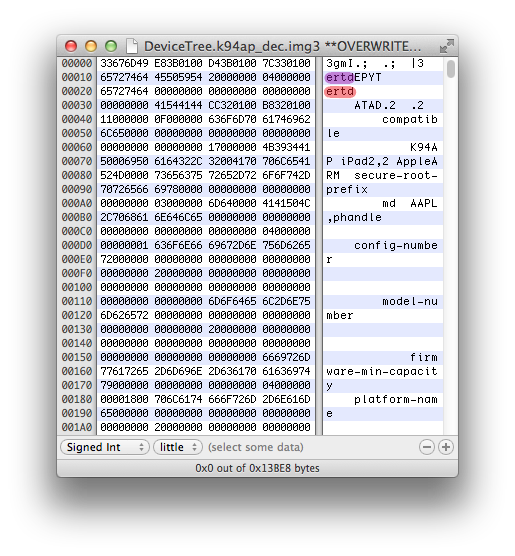

Downgrade back to a vulnerable firmware
The latest firmware available for iPad 2nd (K94AP) is iOS 9.3.5, which comes with a fixed iBoot. We will downgrade back our device to iOS 5.0.1 using SHSH blobs to get back a vulnerable signed iBoot installed on the device.
Jailbreak iOS 9.3.5 using Phoenix application. You will have to sideload it manually using xcode and a free iOS developer account, Cydia Impactor does not work anymore. This jailbreak enables task_for_pid0 on the kernel, so you can run kloader with a patched iBSS.
Developer @tihmstar made a tool to make the process of setting up kloader faster, called kdfuapp. Add his Cydia repository (http://repo.tihmstar.net) then install this tool.
Plug your device to computer. Run kdfuapp from springboard, then turn on all the switches. Press the "Enter kdfu mode" button then look at your device jumping back to a pwned iBSS after pressing the home button. In fact, you will only see a back, no-light screen. However, you should hear a device plugged sound on the computer.
Using futurerestore (@tihmstar), downgrade back your device to iOS 5.0.1 using cached SHSH blobs.
futurerestore_macos -t blobs.shsh --use-pwndfu --no-baseband iPad2,2_5.0.1_9A405_Restore.ipsw
Futurerestore automatically patches iBSS and iBEC using @ih8sn0w's iBoot32Patcher, boot to restore ramdisk then start the restore process.
If nothing has failed during the file systems creation and the iOS system .dmg image restore, the restore daemon eventually proceed to flash signed iOS 5.0.1 low-level images into nand_firmware.
 After, the restore daemon tries to update the baseband firmware. We instructed futurerestore to disable baseband flashing. However, it seems that the restore daemon still enters that routine and requests signatures from TSS for an unknown baseband firmware. This makes the restore process to stop and return an error code.
The device will reboot in recovery mode and you will probably notice that the device screen now shows iOS 5.x recovery logo. The old iOS 5.0.1 bootchain should have been flashed into nand_firmware before the restore daemon return an error attempting to flash the baseband firmware.
After, the restore daemon tries to update the baseband firmware. We instructed futurerestore to disable baseband flashing. However, it seems that the restore daemon still enters that routine and requests signatures from TSS for an unknown baseband firmware. This makes the restore process to stop and return an error code.
The device will reboot in recovery mode and you will probably notice that the device screen now shows iOS 5.x recovery logo. The old iOS 5.0.1 bootchain should have been flashed into nand_firmware before the restore daemon return an error attempting to flash the baseband firmware.
Bootlooped ? yes. Need to restore to latest firmware and try again ? no.
Back in 2011, the iOS 5.x bootchain was vulnerable to a re-restore bug. A re-restore bug is a vulnerability in the restore process that can be used to downgrade or upgrade iOS using cached SHSH blobs, without having to boot pwned (for example using kloader or a low-level exploit).
This re-restore bug allows restoring any 5.x firmwares from a 5.x low-level bootchain. In other words, we are able to jump to a signed iBEC from an iOS 5.x iBoot without being blocked by nonce checks.
From this, we will be able to start again the restore process, but this time with a tweaked iOS 5.0.1 .ipsw file.
mkdir iPad2,2_5.0.1_9A405_Restore
unzip -d ./iPad2,2_5.0.1_9A405_Restore
Extract the full iOS 6.1.3 .zip OTA firmware file using unzip command or MacOS Archive Utility.mkdir iPad2,2_6.1.3_OTA
unzip -d ./iPad2,2_6.1.3_OTA/ ./bbfca2293088712e39f58caf76708fbd6a53e7a7.zip
From the extracted full iOS 6.1.3 OTA folder we named iPad2,2_6.1.3_OTA, go to Firmware folder. Copy from ./iPad2,2_6.1.3_OTA/Firmware folder those three files to ./iPad2,2_5.0.1_9A405_Restore/Firmware.- ICE3_04.12.05_Boot_02.13.Release.bbfw
- ICE3_04.12.05_Boot_02.13.Release.plist
- ICE3_04.12.05.Release.bin
Put ./iPad2,2_6.1.3_OTA/BuildManifest.plist side-by-side of ./iPad2,2_5.0.1_9A405_Restore/BuildManifest.plist like this. Replace the following attributes in the iOS 5.0.1 BuildManifest.plist file by the same attribute of the 6.1.3 OTA BuildManifest.plist file.
- Root/BuildIdentities/Item0/Manifest/BasebandFirmware/Info/Path
- Root/BuildIdentities/Item0/Manifest/BasebandFirmware/ModemStack-Digest
- Root/BuildIdentities/Item0/Manifest/BasebandFirmware/ModemStack-Length
- Root/BuildIdentities/Item0/Manifest/BasebandFirmware/ModemStack-SecPackDigest
- Root/BuildIdentities/Item0/Manifest/UniqueBuildID
Before rebuild the iOS 5.0.1 .ipsw file, let's prepare the nand_firmware for the post-exploitation. After the vulnerability is properly exploited, we make the code run a custom shellcode that will perform jump to another iBoot version (ex. the one of iOS 9.3.5). This new iBoot has to be obviously patched for signature checks in order to properly load boot components (DeviceTree, kernel) for the new iOS version. Since iBoot searches for images to load from nand_firmware, we also have to patch images TYPE to search to avoid conflicting with iOS 5.0.1 flashed images. Refer to my iOS multiboot writeup for details about flashing additional images into nand_firmware. Another thing is that it will be easier to flash additional images in nand_firmware while we are restoring the device because flashing them from userland is not easy and such operations will modify exploit offsets for sure (ex. shift heap buffer because of nvram changes).
To boot your device to iOS userland, you need provide to iBoot at least those two images.- DeviceTree
- Kernelcache
The boot logo and recovery mode logo images are not necessary, they are more there to add a touch of fashion.
Once you are doing the post-exploitation, you might want to be able to easily switch between iOS versions without having to re-flash the nand_firmware (which is risky as I said above). Only DeviceTree image is actually flashed, kernelcache is stored on the filesystem and can be easily replaced.
If you know exactly which iOS version you plan to install for post-exploitation, adjust the steps below considering this. Otherwise, I suggest you to flash at least the DeviceTree of each major iOS updates. The DeviceTree image is not large in size, you can easily flash multiple ones beside the main bootchain.
Go back to your iOS 5.0.1 work folder where the .ipsw files you previously downloaded are stored. Again, I strongly recommand to shasum hash them and compare results with theiphonewiki in order to verify their integrity.
If shasum hashes matches, extract the content of downloaded ipsw files using unzip command or MacOS Archive Utility.
./[Extracted .ipsw file]/Firmware/all_flash/all_flash.k94.production/DeviceTree.[...].img3
of each extracted .ipsw files you plan to use further in the post-exploitation.
pmbonneau-mac#xpwntool [encrypted .img3 file] [decrypted output .img3 file] -iv [IV] -k [KEY] -decrypt
For example, iOS 6.1.3 DeviceTree decryption.
 Note that image decryption is not required because AES GID key will still be enabled after iBoot is exploited. I recommend you to decrypt them because this will make our work easier.
Note that image decryption is not required because AES GID key will still be enabled after iBoot is exploited. I recommend you to decrypt them because this will make our work easier.
Open each decrypted images in a hex editor. If you see some readable strings such as model number (ex. K94AP), DeviceTree image is properly decrypted.
Edit current image type in the IMG3 header and also img3 TYPE tag value by following the method presented there https://www.pmbonneau.com/multiboot/flashing_nand_firmware.html to flash multiple distinct bootchains into nand_firmware.
Default img3 TYPE tag for DeviceTree is dtre.

Change it to dtrb.
Save the image file.
Move it to ./iPad2,2_5.0.1_9A405_Restore/Firmware/all_flash/all_flash.k94.production folder of your extracted iOS 5.x ipsw file.
- Main DeviceTree image (iOS 5.0.1) : dtre
- Second DeviceTree image (iOS 6.1.3) : dtrb
- Third DeviceTree image (iOS 7.1.2) : dtrc
- Fourth DeviceTree image (iOS 8.4.1) : dtrd
- Fifth DeviceTree image (iOS 9.3.5) : dtrf
Note that we skip "e" for the fifth DeviceTree image because it would conflict with the main DeviceTree image and cause unexpected behaviors.
If you want to add some wow-effect to the post-exploitation, you may add some fancy custom bootlogo images. I will add the iOS 7.x and newer bootlogo (white uniform Apple logo) and my custom red dragonfly logo.
./[Extracted .ipsw file]/Firmware/all_flash/all_flash.k94.production/applelogo.[...].img3
of the extracted .ipsw files you want to get the bootlogo.
pmbonneau-mac#xpwntool [encrypted .img3 file] [decrypted output .img3 file] -iv [IV] -k [KEY] -decrypt
For example, iOS 7.1.2 bootlogo decryption.
Default img3 TYPE tag for bootlogo is logo, change it for logb using hexeditor then save the edited file.
You might also want to add a custom bootlogo for an epic boot visual. The easiest way I found to pack a .png or .jpg image file into a .img3 was to use Sn0wbreeze, set device as iPhone 3Gs (old BootROM), build the custom .ipsw then extract the custom bootlogo .img3 file from it.
- Main bootlogo image (iOS 5.0.1, old skeuomorphic Apple logo look) : logo
- Second bootlogo image (iOS 7.1.2, new flat-design Apple logo look) : logb
- Third bootlogo image (custom, red dragonfly logo) : logc
To distinct the stock bootchain and the patched one, I suggest you to flash some recoverylogo images as well. Otherwise, when your pwned bootchain will run, you will see the iOS 5.x recoverylogo on the screen. This might be a little confusing.
Using xpwntool, decrypt the recovery mode logo image located in
./[Extracted .ipsw file]/Firmware/all_flash/all_flash.k94.production/recoverymode.[...].img3
of the extracted .ipsw files you want to get the recovery mode logo.
pmbonneau-mac#xpwntool [encrypted .img3 file] [decrypted output .img3 file] -iv [IV] -k [KEY] -decrypt
Default img3 TYPE tag for recovery mode logo is recm, change it for recb using hexeditor then save the edited file. For this writeup, I will flash recovery mode logo for every major firmware releases.Follow a similar pattern than the one for devicetree image to name TYPE tags.
- Main recovery mode logo image (iOS 5.0.1) : recm
- Second recovery mode logo image (iOS 6.1.3) : recb
- Third recovery mode logo image (iOS 7.1.2) : recc
- Fourth recovery mode logo image (iOS 8.4.1) : recd
- Fifth recovery mode logo image (iOS 9.3.5) : recf (we skip "e" to avoid confusion).
- Main DeviceTree image (iOS 5.0.1) : dtre
- Second DeviceTree image (iOS 6.1.3) : dtrb
- Third DeviceTree image (iOS 7.1.2) : dtrc
- Fourth DeviceTree image (iOS 8.4.1) : dtrd
- Fifth DeviceTree image (iOS 9.3.5) : dtrf
- Main bootlogo image (iOS 5.0.1) : logo
- Second bootlogo image (iOS 7.1.2) : logb
- Third bootlogo image (custom) : logc
- Main recovery mode logo image (iOS 5.0.1) : recm
- Second recovery mode logo image (iOS 6.1.3) : recb
- Third recovery mode logo image (iOS 7.1.2) : recc
- Fourth recovery mode logo image (iOS 8.4.1) : recd
- Fifth recovery mode logo image (iOS 9.3.5) : recf
Add filenames at the bottom of the manifest file, then save it.
We are now ready to re-pack our custom iOS 5.0.1 restore .ipsw file. Go to the root of the extracted original .ipsw file, ./iPad2,2_5.0.1_9A405_Restore/ and compress all the files in a .zip archive. You can use MacOS built-in Archive Utility. Backup the original iOS 5.0.1 .ipsw file somewhere else on your computer, then rename the Archive.zip to iPad2,2_5.0.1_9A405_Restore.ipsw (we keep the original file name).
Use iDeviceRestore to re-restore iOS 5.0.1 using the custom .ipsw file we have just created. Put your device in recovery mode (iBoot) and execute the following command.pmbonneau-mac#idevicerestore -e -d -w iPad2,2_5.0.1_9A405_Restore.ipsw
*** iDeviceRestore Missing screenshot ***The restore process should start, device will jump to the signed iBEC from recovery mode without requiring a nonce. During the flash nand_firmware images routine, you should see the additional images we set in the manifest being flashed like on the screenshots above. If the restore process return an error, verify that the images you added are well named and there's no .img3 TYPE tags conflicts.

After writing images into nand_firmware, the restore process starts to flash the baseband firmware according to the values we have set in the BuildManifest.plist file when we built the custom downgrade .ipsw file. If everything was correctly set, restore process should return done then reboot the device.
If your device is booting in Soft-DFU or recovery mode, you might have a conflict within images flashed into nand_firmware. Verify that you have correctly set IMG3 type for every additional images that are intended to be flashed because two of the same type might confuse the parent bootloader and obviously cause unexpected behaviors.
Otherwise, your device will boot to iOS 5.x initial setup application. Before going further, I strongly recommand you to verify if all additional images were correctly flashed into nand_firmware. To see which images iBoot is able to parse from, a serial (UART) cable is required.
To communicate with the iOS device from serial, you need proper UART drivers for your cable and also a console program. In most cases, UART drivers should be built-in within the operating system.
pmbonneau-mac#ls /dev/ | grep cu.*
If there is no new cu.* device appearing in /dev folder after the cable is plugged, UART drivers for that cable need to be installed. This was my case with OS X Mavericks 10.9, I had to install the UART driver then reboot my computer before the cable was detected. Newer OS X versions seems to have it built-in. For the console program, I suggest you use termz from @Qwertyuiop because the output is very clear.pmbonneau-mac#git clone https://github.com/kpwn/termz.git
pmbonneau-mac#make
To use termz, simply run it with the UART device path of your cable.
pmbonneau-mac#./termz /dev/cu.[UART device ID]
By default, you won't see any serial output from your iOS device because debug-uarts is not enabled. To enable it, do the following.Boot your iOS device in recovery mode (iBoot) by holding home button with serial cable plugged in.
pmbonneau-mac#irecovery -s
irecovery>setenv debug-uarts 3
irecovery>saveenv
irecovery>reboot
Once device is rebooting, you should see iBoot serial output in termz.
Somewhere at the beginning of the serial output log, you should see some info related to nand_firmware images parsed by the bootloader.
If you see all additional img3 types we set while we created the custom downgrade .ipsw file, images were properly flashed into nand_firmware and iBoot can parse them. Otherwise, if some are missing, you might have a type conflict or there was not enough space in nand_firmware for all flashed images.
Once device is rebooted, follow the initial setup. First, verify that the device can read its IMEI number by tapping the circle "?" button at the bottom of the welcome screen. If you see no IMEI, there's something wrong with the baseband at first look. The activation process will help to see if the baseband is properly working. If the device can't activate (stays in an infinite loop), this is probably because your baseband is corrupted. You will have to verify that your buildmanifest.plist baseband signing data is correct and if firmware files stayed intact. If everything is okay, you should reach the iOS home screen.
Congratulations, you device is now downgraded to a firmware that can be potentially used to install any other iOS firmwares released for that device.